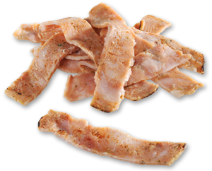
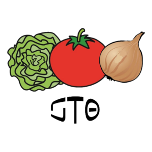
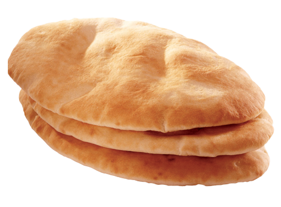

Space Kebab est une jeune entreprise se trouvant dans le couloir TZ-14 de l’anneau de Xentra. Space Kebab vous offre de la nourriture de qualité avec notre nouveau chef ayant participé aux plus grandes émissions de la voie lactée. De ce faite votre kebab pourra être équilibré à vos goûts et couleurs.
Pour mieux vous convaincre voici quelque exemple qui feront de Space Kebab votre kebab :
Notre viande de mouton provient directement de l’entreprise C-écol-O, venant de la planète nb-14 où elle est nourrit de légumes uniquement cultivés à la main et 100% naturels. De plus, ces moutons sont tué et dépecé dans le plus grand soin et sans douleur grâce au savoir d’hypnotisation du chef de cette entreprise. C-écol-O est une entreprise familiale et donc n’encourage pas l'exploitation de clone comme dans les grosses usines. Toutes les actions de C-écol-O contribuent à supprimer l'empreinte carbone afin de préserver nb-14 de la destruction tel que la catastrophe terrienne de l’an 2557.
Les légumes produits par C-écol-O n’étant suffisant qu'à leur production de viande et leur auto-nutrition, les légumes du kebab sont cultivé dans la dimension Z4 où le temps est accéléré par nos propres technologies.
Quand au pain, il est acheté à l’association e-mie qui vend du pain fabriqué par de jeunes artisans volontaires recevant la matière première par la charité et donnant l’argent reçus aux enfants orphelins des guerres intergalactiques.
Ainsi notre kebab est fait de ce qu’il y’a de mieux pour vous et son prix excède de seulement 5% la norme des kebabs habituels mais contribue à la sauvegarde de notre univers. Alors donner de l’argent afin de soutenir le projet dans ses débuts c’est sauver 3 bébés mutants.